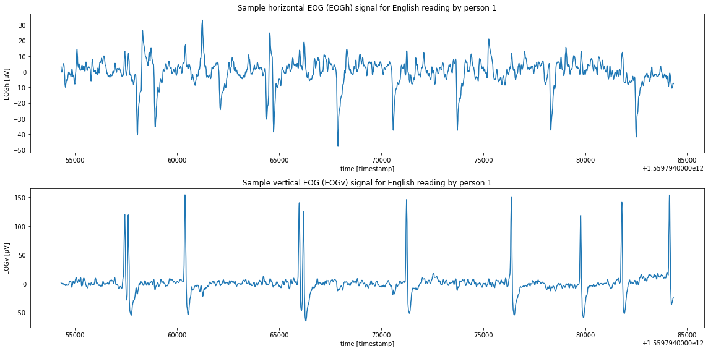
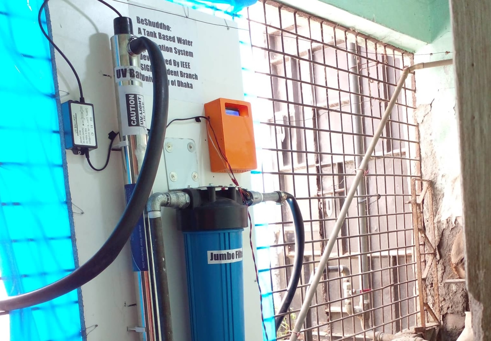
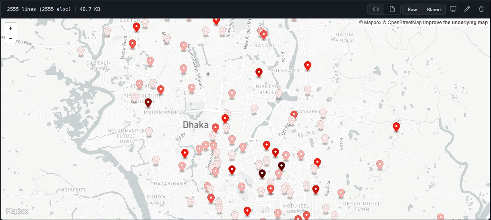
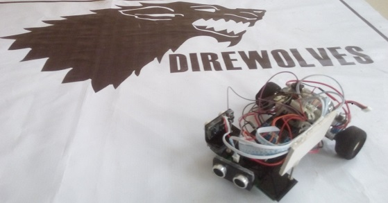
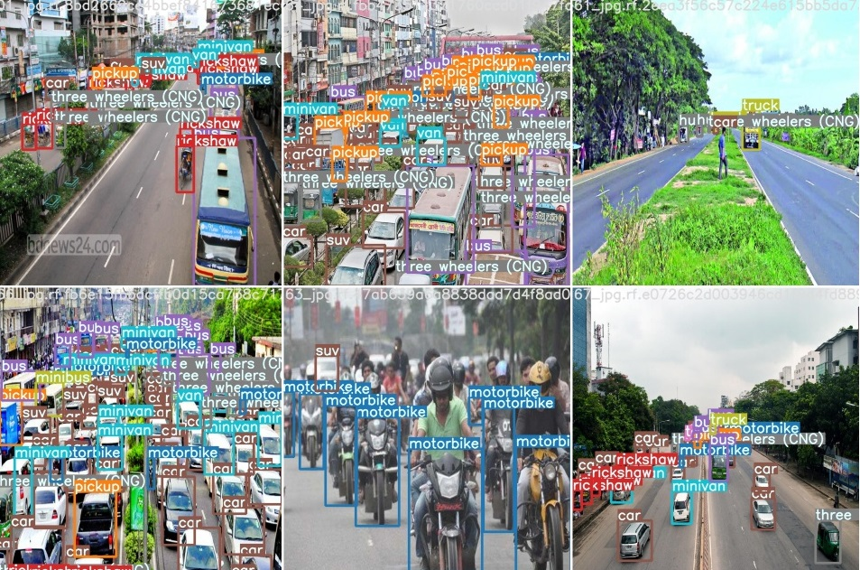

EOG Based Reading Detection in the Wild Using Statistical Features And Scalogram Images
This has been my 4th-year 1st-semester thesis project under the supervision of Dr Mosabber Uddin Ahmed. In this project, we have tried to detect the reading activity (reading English, Japanese horizontal, Japanese vertical and not reading) of 10 different users from JINS MEME EOG glasses data.

BeShuddho: A Tank Based Water Purification System
This project aims to solve the drinking water problem in some parts of Dhaka city. The system can purify the water before entering the reserviour tank. The project is funded by IEEE SIGHT/HAC.

Corona affected Dhaka Map
This project tries to scrap the iedcr.gov.bd website to show the required data using python. When Run, this programms will access the iedcr website and fetch the latest data and show the outputs. Modifying this programs we can easily use those data for further analysis or represent them in different platforms.
Facial Expression Recognition with Keras
This deep learning based project takes the camera/web-cam images/videos to classify 7 different expressions: surprise, happy, sad, neutral, angry, disgust, fear. It was done following the Coursera project: Facial Expression Recognition with Keras

NightKing Technival2018
This is a ardiono based Line follower robot. Which has extra features like: Obstacle avoiding, wall following, stopping at cave, sharp turning, completing line gap.

DhakaAI: Team Mirage
This project involved detection of 21 different classes of vehicles in Dhaka city. We explored AI-based scheme based on YOLOv5 models & weachieved promising results.